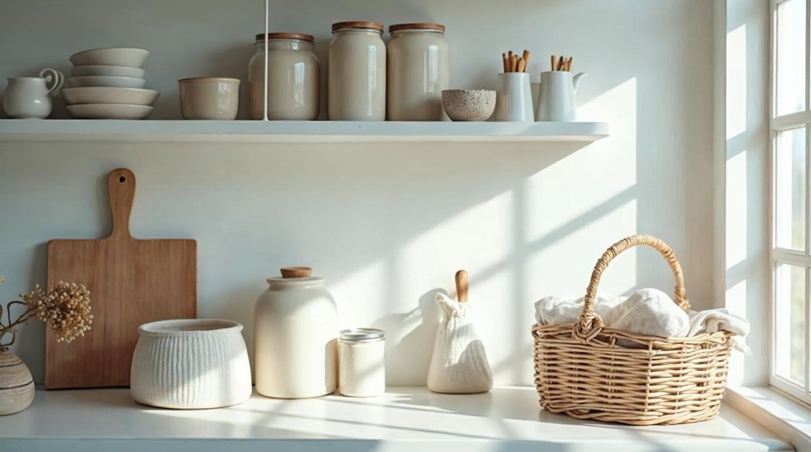
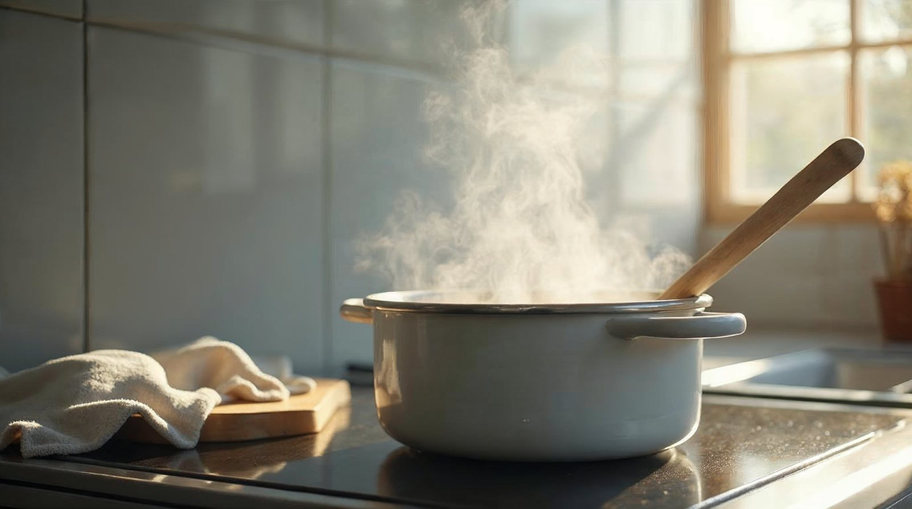
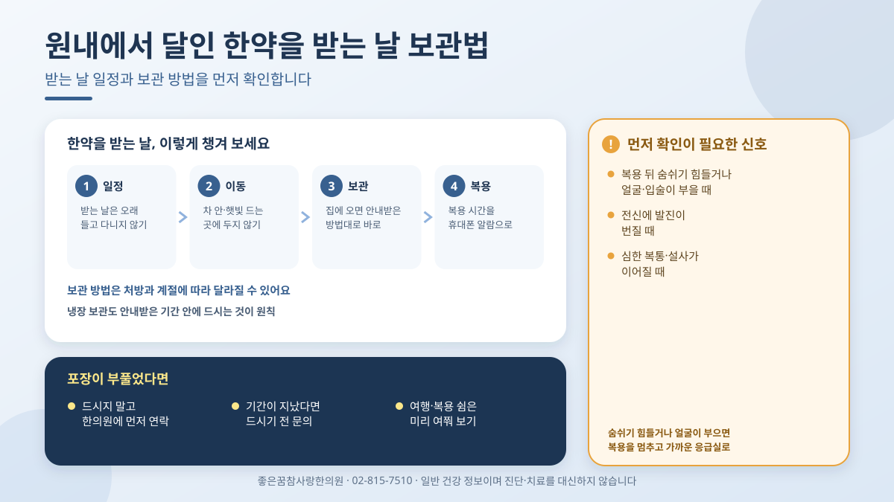

이종호 한의사 감수좋은꿈참사랑한의원 대표원장 (한의사 면허번호 19769)발행 2026-11-25 · 수정 2026-11-26
이 글의 차례
- 왜 받는 날 보관이 중요할까요
- 먼저 이렇게 여쭙니다
- 일상에서 먼저 해 볼 수 있는 것
- 받는 자리에서 이것만은 여쭤 보세요
- 집에 도착하면 이 순서로 정리하세요
- 상황별 예시
- 포장 상태는 이렇게 살펴보세요
- 복용 시각은 생활에 맞춰 정하세요
- 한 번 놓쳤을 때는 이렇게 하세요
- 계절마다 받는 날 조금씩 다르게 챙기세요
- 자주 하는 오해
- 스스로 점검해 보세요
- 아이나 어르신이 드시는 경우
- 복용 기록은 이렇게 짧게 적어 보세요
- 다른 약과 함께 드신다면
- 한의원에서 함께 살필 수 있는 경우
- 얼마나 지켜보고 언제 상담할까요
- 헷갈리기 쉬운 점
- 이렇게 기록해 오시면 상담이 쉬워집니다
- 이런 증상은 먼저 확인이 필요합니다
- 관련 글
한약을 받아 가는 날, 곧바로 냉장고에 넣어야 하는지 묻는 분이 많습니다. 받는 날의 보관 방법은 처방과 계절에 따라 달라질 수 있어 안내받은 대로 지키는 것이 가장 중요합니다. 보관 기간과 복용 기간도 처방받을 때 안내받은 대로 지키시고, 기억나지 않으면 드시기 전에 전화(02-815-7510)로 확인해 주세요.
좋은꿈참사랑한의원은 진찰과 상담 뒤 처방하고, 약재를 한 첩 분량씩 저울로 계량해 대표원장이 검수한 뒤 원내에서 달여 준비합니다.
예를 들어 한약을 받은 뒤 차 트렁크에 넣어 둔 채 반나절을 보내거나, 여름철 가방에 넣고 오후 내내 돌아다니면 포장 안의 상태가 달라질 수 있습니다. 받는 날은 가능하면 진료 뒤 바로 집으로 가는 일정으로 잡고, 어렵다면 받는 날짜를 다른 날로 조정할 수 있는지 미리 여쭤 보시는 것이 좋습니다.
왜 받는 날 보관이 중요할까요
- 따뜻한 곳에 오래 두면 포장 안의 상태가 달라질 수 있습니다.
- 햇빛이 드는 곳은 온도가 쉽게 오릅니다.
- 보관 방법이 처방마다 다를 수 있습니다.
- 복용 시간을 정해 두면 빠뜨리는 날이 줄어듭니다.
- 여름과 겨울처럼 계절에 따라 보관 안내가 달라질 수 있습니다.
먼저 이렇게 여쭙니다
- 받은 뒤 바로 집으로 가시나요?
- 집에 한약을 보관할 자리가 있나요?
- 하루 몇 번 드시기로 안내받으셨나요?
- 다른 약이나 영양제를 함께 드시나요?
- 대신 받아 가실 가족이 있나요?

일상에서 먼저 해 볼 수 있는 것
- 받는 날은 오래 들고 다니지 않게 일정 잡기
- 받으러 오실 때 장바구니나 보냉 가방을 하나 챙기기
- 차 안이나 햇빛 드는 곳에 두지 않기
- 집에 오면 안내받은 방법대로 바로 보관하기
- 냉장 보관이라면 문 쪽보다 온도 변화가 적은 안쪽 칸을 미리 비워 두기
- 받은 날짜와 안내받은 복용 기간을 냉장고 메모에 적어 두기
- 복용 시간을 휴대폰 알람으로 맞추기
- 받는 날 다른 약속이 있다면 받는 날짜를 조정할 수 있는지 미리 여쭤 보기
받는 자리에서 이것만은 여쭤 보세요
한약을 받는 순간에는 이것저것 듣다 보면 정작 중요한 내용을 흘려듣기 쉽습니다. 아래 질문을 휴대폰 메모에 미리 적어 두었다가 받는 자리에서 하나씩 확인하시면, 집에 와서 헷갈리는 일이 줄어듭니다.
- 집에 가서 어디에 보관하면 되나요?
- 언제까지 드시면 되나요?
- 하루 몇 번, 식사 전후 언제 드시나요?
- 데워서 드셔도 되나요, 데운다면 어떻게 하나요?
- 깜빡하고 한 번을 놓치면 어떻게 하나요?
- 드시다가 불편하면 어디로 연락하나요?
들은 답은 그 자리에서 짧게 적어 두세요. 같은 한약이라도 처방과 계절에 따라 안내가 다를 수 있어, 지난번에 들은 내용과 이번 내용을 섞지 않는 것이 중요합니다.
집에 도착하면 이 순서로 정리하세요
- 1. 가방에서 꺼내 받은 파우치 개수를 한 번 세어 봅니다.
- 2. 포장이 부풀거나 새는 곳은 없는지, 냄새가 평소와 다르지 않은지 살펴봅니다.
- 3. 안내받은 장소에 바로 넣어 둡니다.
- 4. 받은 날짜와 드실 기간, 하루 복용 횟수를 메모해 보관 장소 가까이에 붙여 둡니다.
- 5. 첫 복용 시각에 맞춰 휴대폰 알람을 맞춥니다.
이 다섯 가지는 5분이면 끝납니다. 피곤한 날이라도 보관과 메모까지만 해 두시면, 다음 날부터 복용을 이어 가기가 훨씬 편해집니다.
함께 사는 가족에게도 한약을 어디에 두었는지, 언제 드시는지 한 번 알려 두세요. 가족이 모르고 다른 자리로 옮기거나, 냉장고 정리를 하다 파우치를 밀어 두는 일을 막을 수 있습니다. 메모를 가족 모두가 보는 자리에 붙여 두면 서로 복용 시각을 챙겨 주기도 쉽습니다.

상황별 예시
- 예를 들어 퇴근길에 한약을 받아 가는 직장인이라면, 평일 저녁 진료 시간(20:00까지) 안에 받아 곧장 집으로 가는 날로 잡는 편이 좋습니다. 회식이나 약속이 있는 날이라면 받는 날짜를 하루 미룰 수 있는지 미리 전화로 여쭤 보세요.
- 예를 들어 자녀가 부모님 한약을 대신 받아 가는 경우라면, 들은 보관 방법과 하루 복용 횟수, 복용 시각을 메모해 부모님 댁 냉장고에 붙여 두시면 헷갈리지 않습니다. 부모님이 드시는 다른 약 목록도 함께 알려 주세요.
- 예를 들어 주말에 받아 가는 경우라면 토·일·공휴일 진료는 09:30~15:00이니, 받는 시간을 미리 정해 두고 받은 뒤 오래 돌아다니지 않는 일정으로 잡습니다.
포장 상태는 이렇게 살펴보세요
드시기 전에 파우치를 한 번 손에 들고 살펴보는 습관을 들여 보세요. 포장이 빵빵하게 부풀어 있거나, 이음새에서 내용물이 새어 나왔거나, 열었을 때 시큼하거나 평소와 다른 냄새가 난다면 드시지 말고 따로 빼 두신 뒤 한의원에 연락해 주세요.
색이나 맛이 지난번 처방과 조금 달라 보이는 것은 처방이 바뀌었기 때문일 수도 있습니다. 걱정이 되면 혼자 판단해 버리지 마시고 전화(02-815-7510)로 여쭤 주세요. 남은 파우치를 버리기 전에 확인하시면 다음 처방을 정할 때도 참고가 됩니다.
복용 시각은 생활에 맞춰 정하세요
복용 시각은 받을 때 안내받은 대로 지키는 것이 기본이지만, 실제로 지키려면 하루 일정과 맞아야 합니다. 출근 준비로 바쁜 아침, 점심을 밖에서 먹는 날, 저녁 약속이 잦은 요일처럼 복용을 놓치기 쉬운 때를 미리 떠올려 보세요.
예를 들어 점심 복용분을 회사에 챙겨 가야 하는 경우라면, 회사에서 어떻게 보관하면 되는지 받는 날 함께 여쭤 보시는 것이 좋습니다. 일정상 안내받은 시각을 지키기 어렵다면 그 사정을 말씀해 주시면 생활에 맞는 방법을 함께 정합니다.
한 번 놓쳤을 때는 이렇게 하세요
바쁜 날 한 번쯤 복용을 놓치는 일은 흔합니다. 놓친 것을 채우려고 다음 복용 때 두 봉을 한꺼번에 드시기보다, 받을 때 안내받은 방법을 먼저 떠올려 보시고 기억나지 않으면 전화로 여쭤 주세요.
놓친 날은 기록에 표시만 해 두시면 됩니다. 다음 진료 때 어느 시간대를 자주 놓치는지 함께 보면, 복용 시각을 다시 정하는 데 도움이 됩니다. 놓치는 날이 잦다고 미안해하실 필요는 없습니다.
놓치는 시간대가 늘 같다면 그 시간대의 생활을 들여다보는 것이 실마리가 됩니다. 점심을 자주 놓친다면 점심 복용분을 챙기는 방법을, 저녁을 자주 놓친다면 귀가 시각에 맞춘 알람을 함께 정해 볼 수 있습니다.
계절마다 받는 날 조금씩 다르게 챙기세요
- 여름에는 한낮의 차 안과 햇볕 드는 버스 창가가 생각보다 뜨겁습니다. 받으러 오시는 시간을 해가 덜 뜨거운 때로 잡고, 보냉 가방을 챙기시면 마음이 놓입니다.
- 장마철에는 우산과 짐이 함께 늘어나 한약 봉투를 바닥에 내려놓기 쉬우니, 손잡이가 있는 가방에 담아 오세요.
- 겨울에는 바깥은 춥지만 난방이 된 지하철과 상가 안은 따뜻합니다. 받은 뒤 여기저기 들르지 말고 곧장 집으로 가시는 일정이 좋습니다.
- 명절이나 연휴 앞이라면 받는 날과 귀성 일정이 겹치지 않는지 미리 살피고, 들고 가셔야 한다면 받는 날 어떻게 챙기면 되는지 함께 여쭤 보세요.
자주 하는 오해
- 겨울에는 바깥이 추우니 받은 날 아무 데나 두어도 괜찮다고 여기기 쉽지만, 난방이 된 실내나 히터를 켠 차 안은 생각보다 따뜻해 안내받은 방법대로 보관하는 것이 좋습니다.
- 받자마자 한 봉을 바로 드셔야 한다고 여기는 분도 있지만, 언제부터 드실지는 받을 때 안내받은 복용 시각을 따르시면 됩니다.
스스로 점검해 보세요
- 받는 날 바로 집으로 가는 일정이다
- 안내받은 보관 장소에 파우치를 둘 자리를 비워 두었다
- 안내받은 보관 방법과 보관 기간을 메모해 두었다
- 하루 복용 횟수와 시각을 알람으로 맞춰 두었다
- 함께 드시는 약과 영양제를 한의원에 알렸다
- 포장이 부풀거나 냄새가 이상하면 드시지 않는다는 것을 알고 있다
아이나 어르신이 드시는 경우
아이가 한약을 드시는 경우라면 복용 시각을 보호자가 챙기게 됩니다. 어린이집이나 학교에 가는 날과 집에 있는 날의 복용 시각이 달라지기 쉬워, 받는 날 평일과 주말 일정을 함께 말씀해 주시면 하루 흐름에 맞춰 안내해 드립니다.
어르신은 드신 것을 잊고 한 번 더 드시거나, 반대로 드셨다고 여기고 거르시는 경우가 있습니다. 요일과 시간대가 적힌 약 달력이나 냉장고 앞 체크표에 드실 때마다 표시하시도록 해 두면 가족도 멀리서 전화로 확인하기 쉽습니다.
복용 기록은 이렇게 짧게 적어 보세요
기록은 길 필요가 없습니다. 하루 한 줄이면 충분합니다.
- 날짜와 복용한 시간대: 아침, 점심, 저녁 가운데 드신 것에 동그라미
- 놓친 시간대가 있다면 그 이유 한두 단어: 회의, 외출, 깜빡함
- 속 상태: 편함, 더부룩함, 쓰림
- 변 상태와 잠: 평소와 같음, 무름, 잘 잠, 자주 깸
예를 들어 '27일 아침·저녁 드심, 점심 놓침(외근), 속 편함, 잠 비슷' 정도면 됩니다. 이 한 줄이 쌓이면 다음 진료 때 지난 시간을 따로 떠올리지 않아도 이야기를 이어 갈 수 있습니다.
다른 약과 함께 드신다면
혈압약이나 혈당약처럼 처방받아 드시는 약이 있다면, 한약을 시작한다고 그 약을 임의로 줄이거나 끊지 마세요. 처방 전에 드시는 약을 함께 확인하고, 드시는 시각이 겹친다면 간격을 어떻게 두면 좋을지 받는 날 안내해 드립니다.
한약을 드시는 도중에 다른 병원에서 새 약을 처방받으셨다면 다음 진료를 기다리지 말고 전화로 알려 주세요. 영양제나 건강식품을 새로 드시기 시작한 경우도 마찬가지입니다. 임신 중이거나 임신 가능성이 있다면 처방 전에 먼저 말씀해 주시고, 다니시는 산부인과와도 상의해 주세요.
한의원에서 함께 살필 수 있는 경우
- 복용 중 속이 불편하거나 변이 달라지는 경우 복용을 멈추고 연락 주시면 상태를 듣고 함께 조정합니다.
- 다른 약을 새로 시작한 경우 함께 먹어도 되는지 확인합니다.
- 복용 시간이 일정하지 않은 경우 생활에 맞는 방법을 함께 정합니다.
좋은꿈참사랑한의원에서는 받아 가실 때 보관과 복용 방법을 알려 드리며, 궁금한 점은 전화로 여쭤 보셔도 됩니다.
한약은 받는 날보다 앞선 진료에서 시작됩니다. 처음 오시면 맥부터 짚으며 불편한 점과 생활 이야기를 듣고, 필요하면 혀와 배를 살피며, 복용 중인 약 목록과 검진 결과지도 함께 봅니다.
한약이 필요하다고 판단되면 처방과 받으실 날을 정하고, 받는 날에는 보관과 복용 방법을 안내해 드립니다. 다음에 오시면 드시는 동안의 속·변·잠 변화와 빠뜨린 날을 지난 이야기에 이어서 여쭙습니다.

얼마나 지켜보고 언제 상담할까요
- 받은 날 집에 도착하기까지 오래 걸렸거나 차 안에 두었던 것이 마음에 걸리면, 드시기 전에 전화로 먼저 여쭤 주세요.
- 처음 일주일은 복용 시각과 빠뜨린 날, 속·변·잠의 변화를 짧게 적어 보세요. 다음 진료 때 이 기록을 함께 봅니다.
- 속 불편이나 무른 변 같은 불편이 생기면 다음 진료를 기다리지 말고 복용을 멈춘 뒤 연락해 주세요.
- 남은 파우치가 며칠분일 때 다음 진료 날짜를 미리 정해 두면 그사이 변화를 이어서 살피기 쉽습니다.
헷갈리기 쉬운 점
냉장고에 넣는다고 해서 오래 두어도 된다는 뜻은 아닙니다. 안내받은 기간 안에 드시는 것이 원칙이고, 여러 날 여행을 가거나 복용을 쉬어야 할 일이 생기면 남은 한약을 어떻게 할지 먼저 여쭤 보시는 것이 안전합니다.
이렇게 기록해 오시면 상담이 쉬워집니다
- 받은 날짜와 보관 장소
- 복용 시간과 빠뜨린 날
- 복용 뒤 속·변·잠의 변화
- 새로 시작한 약과 영양제
- 받은 날 집에 도착하기까지 걸린 시간
이런 증상은 먼저 확인이 필요합니다
- 복용 뒤 숨쉬기 힘들거나 얼굴·입술이 붓는 경우
- 전신에 발진이 번지는 경우
이런 신호가 있으면 한의원보다 가까운 병원이나 응급실을 먼저 찾으세요.
관련 글
- 원내 탕전은 무엇이고 한약은 어떤 과정으로 만들어지나요?
- 한약 파우치는 어떻게 보관하고, 여행 갈 때는 어떻게 챙기나요?
- 한약을 먹는 동안 어떤 변화를 기록하고 언제 연락해야 하나요?

여쭙는 것
- 받은 뒤 바로 집으로 가시나요?
- 집에 한약을 보관할 자리가 있나요?
- 하루 몇 번 드시기로 안내받으셨나요?
생활에서 해 볼 것
- 받는 날은 오래 들고 다니지 않게 일정 잡기
- 받으러 오실 때 장바구니나 보냉 가방을 하나 챙기기
- 차 안이나 햇빛 드는 곳에 두지 않기
한의원에서 함께 살필 것
- 복용 중 속이 불편하거나 변이 달라지는 경우 복용을 멈추고 연락 주시면 상태를 듣고…
- 다른 약을 새로 시작한 경우 함께 먹어도 되는지 확인합니다.
- 복용 시간이 일정하지 않은 경우 생활에 맞는 방법을 함께 정합니다.
먼저 확인이 필요한 신호
- 복용 뒤 숨쉬기 힘들거나 얼굴·입술이 붓는 경우
- 전신에 발진이 번지는 경우
한눈에 보는 표
| 구분 | 핵심 |
|---|---|
| 여쭙는 것 | 받은 뒤 바로 집으로 가시나요? 집에 한약을 보관할 자리가 있나요? |
| 생활에서 해 볼 것 | 받는 날은 오래 들고 다니지 않게 일정 잡기 받으러 오실 때 장바구니나 보냉 가방을 하나 챙기기 |
| 한의원에서 함께 살필 것 | 복용 중 속이 불편하거나 변이 달라지는 경우 복용을 멈추고 연락 주시면 상태를 듣고 함께 조정합니다. 다른 약을 새로 시작한 경우 함께 먹어도 되는지 확인합니다. |
| 먼저 확인이 필요한 신호 | 복용 뒤 숨쉬기 힘들거나 얼굴·입술이 붓는 경우 전신에 발진이 번지는 경우 |
자주 묻는 질문
포장이 부풀었어요.
드시지 마시고 한의원에 먼저 연락해 주세요.
여행 갈 때 가져가도 되나요?
보관 방법을 미리 여쭤 보시고 계획을 함께 세우시면 됩니다.
데워 먹어도 되나요?
받으실 때 안내해 드린 방법을 따르시고, 궁금하면 전화(02-815-7510)로 여쭤 주세요.
유통기한이 있나요?
받으실 때 안내해 드리는 기간 안에 드시고, 기간이 지났다면 드시기 전에 먼저 문의해 주세요.
가족이 대신 받아 가도 되나요?
대신 받으시는 방법과 필요한 것은 방문 전 전화로 확인해 주세요. 받으실 때 들은 보관과 복용 방법을 메모해 두시면 좋습니다.
받는 날짜를 바꿀 수 있나요?
처방과 준비 일정에 따라 다르니 전화(02-815-7510)로 먼저 여쭤 주세요.
한 번 놓쳤는데 두 봉을 한꺼번에 먹어도 되나요?
임의로 한꺼번에 드시기보다 받을 때 안내받은 방법을 따르시고, 기억나지 않으면 전화로 먼저 여쭤 주세요.
좋은꿈참사랑한의원은 재진 때 지난번 이야기부터 이어서 여쭙니다. 진료시간과 예약은 오시는 길에서 확인하세요.
어디서 상담받을 수 있나요?
좋은꿈참사랑한의원은 서울 동작구 만양로2길 2 신성빌딩 3층·5층(서울 동작구 상도동, 7호선 상도역 3번 출구 근처)에 있습니다. 한의사 3명(이종호 대표원장, 조영기 수석진료원장, 정원영 진료원장)이 진료합니다. 진료시간은 평일 09:30~20:00(점심 13:00~14:00), 토·일·공휴일 09:30~15:00이며, 방문 전 전화로 확인을 권합니다. 예약은 네이버 예약, 카카오톡 상담, 전화 02-815-7510로 받습니다.
이 글은 일반적인 건강 정보이며 개인의 진단이나 치료를 대신하지 않습니다. 증상이 있거나 복용 중인 약이 있다면 진료를 통해 확인하세요. 치료 효과는 개인마다 다를 수 있습니다.
작성 기준: 일반적으로 알려져 있는 건강 정보를 참고해 정리했습니다(대표원장 감수). 증상 기록은 1~2주 동안 하루 1회, 비슷한 시간에 적어 오시면 지난 상태와 비교하기 쉽습니다.